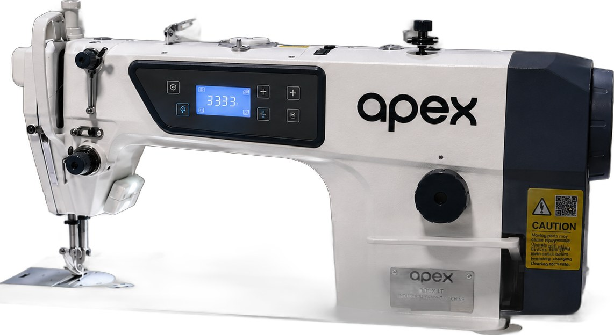
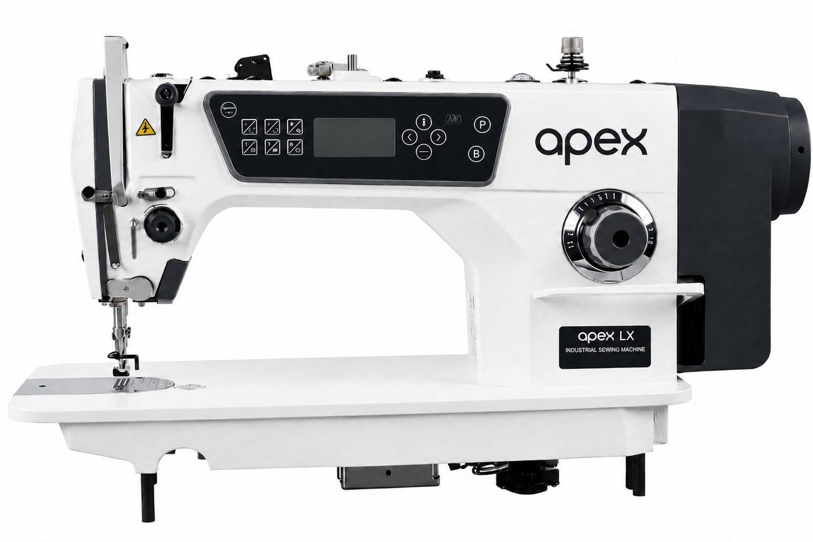
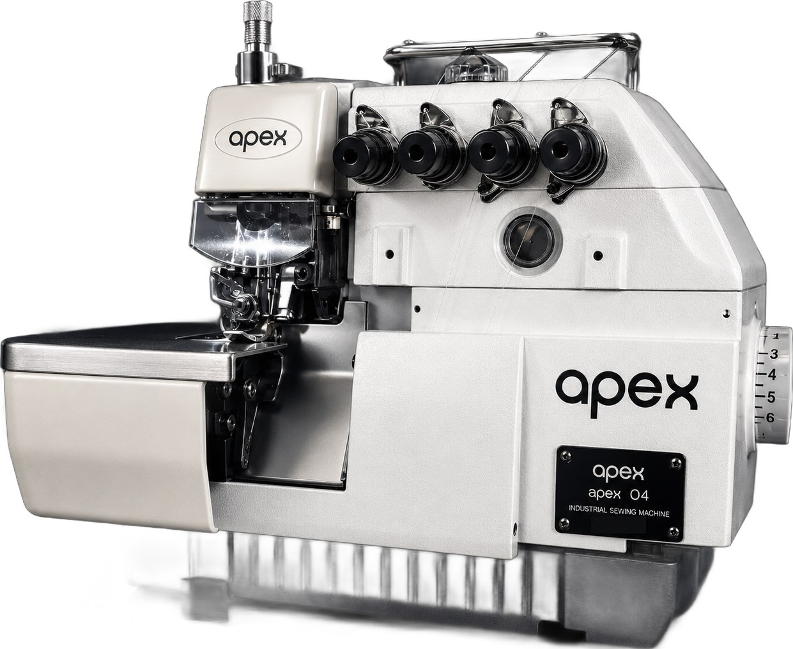
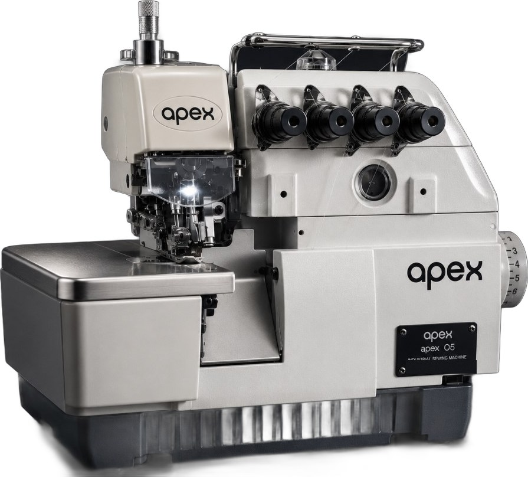
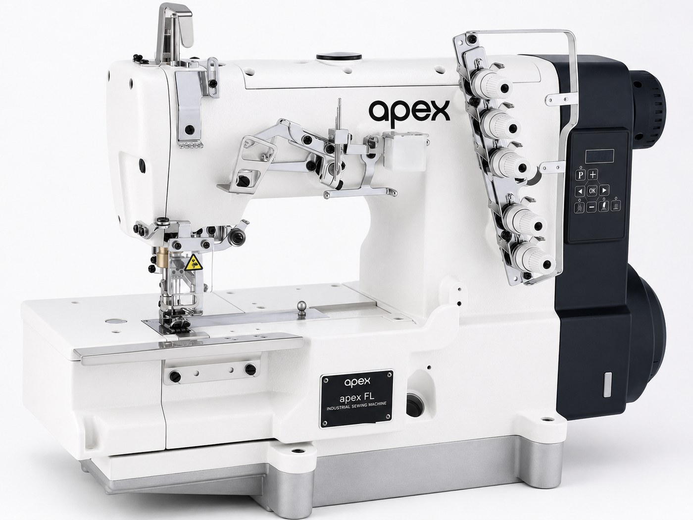

<meta charset="utf-8" />
<meta name="viewport" content="width=device-width, initial-scale=1" />
<title>apex — Industrial Sewing Machines</title>
<meta name="description" content="apex builds industrial sewing machines for the modern production line — engineered for speed, stitch quality and long, quiet shifts. Lockstitch, overlock and interlock." />
<meta name="theme-color" content="#ffffff" />

<!-- Open Graph -->
<meta property="og:type" content="website" />
<meta property="og:title" content="apex — Industrial Sewing Machines" />
<meta property="og:description" content="Industrial sewing machines built for the modern production line. Engineered for speed, stitch quality and long, quiet shifts." />
<meta property="og:url" content="https://www.apexsewing.com" />
<meta property="og:image" content="https://www.apexsewing.com/assets/machines/apex-fx.jpg" />

<link rel="icon" href="assets/favicon.svg" type="image/svg+xml" />
<link rel="preconnect" href="https://fonts.googleapis.com" />
<link rel="preconnect" href="https://fonts.gstatic.com" crossorigin />
<link href="https://fonts.googleapis.com/css2?family=Poppins:wght@300;400;500;600&family=IBM+Plex+Mono:wght@400;500;600&display=swap" rel="stylesheet" />
<link rel="stylesheet" href="styles.css" />

<!-- ============================== NAV ============================== -->
<header class="nav" id="nav">
  <div class="nav__inner">
    <a class="nav__brand" href="#top" aria-label="apex — home">
      
    </a>
    <nav class="nav__links" aria-label="Primary">
      <a href="#lockstitch">Lockstitch</a>
      <a href="#overlock">Overlock &amp; Interlock</a>
      <a href="#technology">Technology</a>
      <a href="#support">Support</a>
    </nav>
    <a href="#enquire" class="btn btn--solid nav__cta">Enquire</a>
    <button class="nav__burger" id="burger" aria-label="Menu" aria-expanded="false">
      <span></span><span></span>
    </button>
  </div>
  <div class="nav__mobile" id="navMobile">
    <a href="#lockstitch">Lockstitch</a>
    <a href="#overlock">Overlock &amp; Interlock</a>
    <a href="#technology">Technology</a>
    <a href="#support">Support</a>
    <a href="#enquire" class="btn btn--solid">Enquire</a>
  </div>
</header>

<main id="top">

  <!-- ============================== HERO ============================== -->
  <section class="hero">
    <div class="hero__meta">
      <span>Product range</span>
      <span>Industrial sewing machines</span>
    </div>
    <div class="hero__rule" aria-hidden="true"></div>

    <div class="hero__inner">
      <div class="hero__copy">
        
        <p class="hero__lede reveal" style="--d:.1s">
          Industrial sewing machines built for the modern production line.
          Engineered for speed, stitch quality and long, quiet shifts.
        </p>

        <ul class="hero__index reveal" style="--d:.2s">
          <li><a href="#lockstitch"><b>LT</b><span>Direct-drive lockstitch · In-built trimmer</span></a></li>
          <li><a href="#lockstitch"><b>LX</b><span>Full-function direct-drive lockstitch</span></a></li>
          <li><a href="#overlock"><b>O4</b><span>Four-thread overlock</span></a></li>
          <li><a href="#overlock"><b>O5</b><span>Five-thread overlock</span></a></li>
          <li><a href="#overlock"><b>FL</b><span>Flatbed interlock</span></a></li>
        </ul>

        <div class="hero__actions reveal" style="--d:.3s">
          <a href="#lockstitch" class="btn btn--solid">Explore the range</a>
          <a href="#enquire" class="btn btn--line">Request a quote</a>
        </div>
      </div>

      <figure class="hero__stage reveal-img">
        <div class="frame">
          
        </div>
        <figcaption class="stamp">
          <span class="badge">FX</span>
          <span class="stamp__text">Full-function direct-drive lockstitch</span>
        </figcaption>
      </figure>
    </div>
  </section>

  <!-- ============================== BLACK BAND ============================== -->
  <section class="band">
    <div class="band__inner">
      <p>One line. Every core seam operation covered.</p>
      <p class="band__models">LT&nbsp;&nbsp;·&nbsp;&nbsp;LX&nbsp;&nbsp;·&nbsp;&nbsp;O4&nbsp;&nbsp;·&nbsp;&nbsp;O5&nbsp;&nbsp;·&nbsp;&nbsp;FL</p>
    </div>
  </section>

  <!-- ============================== LOCKSTITCH LINE ============================== -->
  <section class="section" id="lockstitch">
    <header class="section__bar">
      <h2>The lockstitch line</h2>
      <span class="section__no">01&nbsp;/&nbsp;03</span>
    </header>

    <div class="cards cards--2">
      <!-- LT -->
      <article class="card reveal">
        <div class="frame"></div>
        <div class="stamp">
          <span class="badge">LT</span>
          <h3>Direct-drive lockstitch with in-built trimmer</h3>
        </div>
        <p class="card__text">
          A direct-drive lockstitch with an in-built thread trimmer. The integrated
          servo starts instantly and runs quietly, while automatic trimming cuts the
          thread at the end of every seam without the operator leaving the fabric.
        </p>
        <dl class="specs">
          <div><dt>Max sewing speed</dt><dd>5,000 spm</dd></div>
          <div><dt>Thread trimming</dt><dd>In-built</dd></div>
          <div><dt>Drive</dt><dd>Integrated servo</dd></div>
          <div><dt>Application</dt><dd>Light to medium fabrics</dd></div>
        </dl>
      </article>

      <!-- LX -->
      <article class="card reveal" style="--d:.1s">
        <div class="frame"></div>
        <div class="stamp">
          <span class="badge">LX</span>
          <h3>Full-function direct-drive lockstitch</h3>
        </div>
        <p class="card__text">
          The flagship of the lockstitch line. Automatic thread trimming, backtacking
          and foot lift remove every manual step between seams, keeping operators on
          the fabric and cycle times down across the whole shift.
        </p>
        <dl class="specs">
          <div><dt>Max sewing speed</dt><dd>5,000 spm</dd></div>
          <div><dt>Automation</dt><dd>Trim · backtack · foot lift</dd></div>
          <div><dt>Control</dt><dd>Programmable panel</dd></div>
          <div><dt>Application</dt><dd>Light to medium fabrics</dd></div>
        </dl>
      </article>
    </div>
  </section>

  <!-- ============================== OVERLOCK & INTERLOCK ============================== -->
  <section class="section" id="overlock">
    <header class="section__bar">
      <h2>Overlock &amp; interlock</h2>
      <span class="section__no">02&nbsp;/&nbsp;03</span>
    </header>

    <div class="cards cards--3">
      <!-- O4 -->
      <article class="card reveal">
        <div class="frame"></div>
        <div class="stamp">
          <span class="badge">O4</span>
          <h3>Four-thread overlock</h3>
        </div>
        <p class="card__text">
          Edges, trims and seams in one pass. Built for high-volume serging on wovens
          and knits, with differential feed that keeps stretch fabrics flat at full speed.
        </p>
        <dl class="specs">
          <div><dt>Max sewing speed</dt><dd>6,000 spm</dd></div>
          <div><dt>Threads / needles</dt><dd>4 / 2</dd></div>
          <div><dt>Feed</dt><dd>Differential</dd></div>
        </dl>
      </article>

      <!-- O5 -->
      <article class="card reveal" style="--d:.08s">
        <div class="frame"></div>
        <div class="stamp">
          <span class="badge">O5</span>
          <h3>Five-thread overlock</h3>
        </div>
        <p class="card__text">
          Safety stitching for heavier work. A chainstitch seam and an overlocked edge
          in a single pass, for trousers, denim and workwear that has to hold.
        </p>
        <dl class="specs">
          <div><dt>Max sewing speed</dt><dd>6,000 spm</dd></div>
          <div><dt>Threads / needles</dt><dd>5 / 2</dd></div>
          <div><dt>Stitch type</dt><dd>Safety stitch</dd></div>
        </dl>
      </article>

      <!-- FL -->
      <article class="card reveal" style="--d:.16s">
        <div class="frame"></div>
        <div class="stamp">
          <span class="badge">FL</span>
          <h3>Flatbed interlock</h3>
        </div>
        <p class="card__text">
          The coverstitch specialist for hems, binding and topstitching on knits.
          Three needles and five threads deliver a flat, elastic seam that moves
          with the garment.
        </p>
        <dl class="specs">
          <div><dt>Max sewing speed</dt><dd>5,500 spm</dd></div>
          <div><dt>Threads / needles</dt><dd>5 / 3</dd></div>
          <div><dt>Stitch type</dt><dd>Coverstitch</dd></div>
        </dl>
      </article>
    </div>
  </section>

  <!-- ============================== TECHNOLOGY ============================== -->
  <section class="section" id="technology">
    <header class="section__bar">
      <h2>Engineering principles</h2>
      <span class="section__no">03&nbsp;/&nbsp;03</span>
    </header>

    <ul class="principles">
      <li class="reveal">
        <span class="principles__no">01</span>
        <h3>Direct-drive servo</h3>
        <p>Power delivered straight to the needle shaft — no belts, no drift, no wasted
          heat. Instant, near-silent torque and a precise stop position on every seam.</p>
      </li>
      <li class="reveal" style="--d:.06s">
        <span class="principles__no">02</span>
        <h3>Automation where it counts</h3>
        <p>Trimming, backtacking and foot lift handled by the machine, so operators
          stay on the fabric and every piece cycles faster.</p>
      </li>
      <li class="reveal" style="--d:.12s">
        <span class="principles__no">03</span>
        <h3>Repeatable by design</h3>
        <p>Programmable panels hold stitch counts, speeds and tack patterns — the same
          seam from every operator, on every shift.</p>
      </li>
      <li class="reveal" style="--d:.18s">
        <span class="principles__no">04</span>
        <h3>Efficient to run</h3>
        <p>Servo motors draw current only while sewing. Across a full floor, that cuts
          sewing energy dramatically against clutch-motor stock.</p>
      </li>
    </ul>
  </section>

  <!-- ============================== SUPPORT ============================== -->
  <section class="section section--support" id="support">
    <div class="support">
      <div class="support__lead">
        <p class="kicker">Support</p>
        <h2>Backed on the ground,<br />not just on paper.</h2>
        <p class="support__intro">
          A machine on your floor is never a machine on its own. Every apex ships with
          parts, tooling and hands-on technical support — so downtime stays measured
          in minutes, not weeks.
        </p>
      </div>
      <ul class="support__list">
        <li><b>Genuine parts, held regionally</b><span>Fast-moving spares stocked close to your line, not shipped across an ocean.</span></li>
        <li><b>Installation &amp; commissioning</b><span>Set up, timed and tuned to your fabric on day one by trained technicians.</span></li>
        <li><b>Operator &amp; mechanic training</b><span>Your team learns the machine properly, so small issues never become stoppages.</span></li>
        <li><b>Warranty that means it</b><span>Clear coverage and a real number to call when a line has to keep moving.</span></li>
      </ul>
    </div>
  </section>

  <!-- ============================== ENQUIRE ============================== -->
  <section class="enquire" id="enquire">
    <div class="enquire__inner">
      <div class="enquire__copy">
        <p class="kicker kicker--light">Enquire</p>
        <h2>Let's put apex on your floor.</h2>
        <p>
          Tell us what you sew and how much of it. We'll come back with the right
          models, a configuration for your fabric, and pricing — usually within one
          working day.
        </p>
        <div class="enquire__direct">
          <a href="mailto:sales@apexsewing.com">sales@apexsewing.com</a>
          <span>www.apexsewing.com</span>
        </div>
      </div>

      <form class="enquire__form" id="enquireForm" action="mailto:sales@apexsewing.com" method="post" enctype="text/plain">
        <div class="field">
          <label for="name">Name</label>
          <input id="name" name="name" type="text" required autocomplete="name" />
        </div>
        <div class="field">
          <label for="company">Company</label>
          <input id="company" name="company" type="text" autocomplete="organization" />
        </div>
        <div class="field">
          <label for="email">Email</label>
          <input id="email" name="email" type="email" required autocomplete="email" />
        </div>
        <div class="field">
          <label for="country">Country</label>
          <input id="country" name="country" type="text" autocomplete="country-name" />
        </div>
        <div class="field field--full">
          <label for="message">What are you looking to sew?</label>
          <textarea id="message" name="message" rows="3" placeholder="e.g. denim trousers, ~40 machines, 2 lines"></textarea>
        </div>
        <button type="submit" class="btn btn--paper btn--block">Send enquiry</button>
      </form>
    </div>
  </section>

</main>

<!-- ============================== FOOTER ============================== -->
<footer class="foot">
  <div class="foot__inner">
    <a class="foot__brand" href="#top"></a>
    <nav class="foot__nav" aria-label="Footer">
      <a href="#lockstitch">Lockstitch</a>
      <a href="#overlock">Overlock</a>
      <a href="#technology">Technology</a>
      <a href="#support">Support</a>
      <a href="#enquire">Enquire</a>
    </nav>
    <p class="foot__site">www.apexsewing.com</p>
  </div>
  <div class="foot__legal">
    <p>© <span id="year">2026</span> apex — Industrial Sewing Machines. All rights reserved.</p>
  </div>
</footer>

<script src="script.js"></script>
